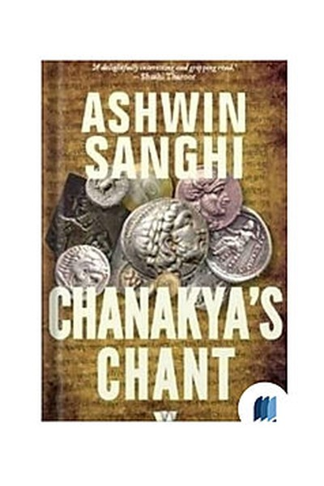

Why Did The Nanda Empire Fail?
The Richest Empire in India, Lost Because the King Couldn't Keep a Promise
📜 What Happened
The Nanda dynasty ruled Magadha — the richest empire of ancient India, with an army numbering in the hundreds of thousands and treasuries so vast that even the later Mauryan conquerors marvelled at what they inherited. The Nandas were brilliant administrators but hated rulers: their taxes were crushing and their king, Dhana Nanda, was infamous for arrogance and parsimony. The legend that built the dynasty's grave: the young Chanakya, a Brahmin scholar, was humiliated at the Nanda court — thrown off the king's seat, insulted in public. He vowed to destroy the dynasty, and he did: he found a boy named Chandragupta, trained him, raised an army, and toppled the Nandas. The richest empire on earth fell not to a stronger army but to one humiliated scholar's 20-year promise.
☠️ The Fatal Mistake
Treating subjects — even brilliant ones — as disposable; the insult that seemed trivial was the seed of the dynasty's end.
🧠 The Lesson (Free for You)
Arrogance in power is not a personality flaw; it is a recruitment drive for your enemies. Every person you humiliate carries a memory that outlives your reign — Chanakya's vengeance took twenty years, but it was never abandoned. The Nandas' gold, armies and numbers meant nothing once someone with genius and a grudge decided they were worth nothing. Treat the people you can dismiss as the only ones who can destroy you.
📕 The Antidote Book

Sanghi's novel weaves two timelines: the ancient strategist Chanakya engineering Chandragupta's rise, and a modern-day historian who discovers a chant that brings Chanakya's spirit of strategy into contemporary Indian…
📖 OPEN THE FULL INTERACTIVE BREAKDOWN →Searchable, filterable, free forever — they paid billions; your lesson is free.